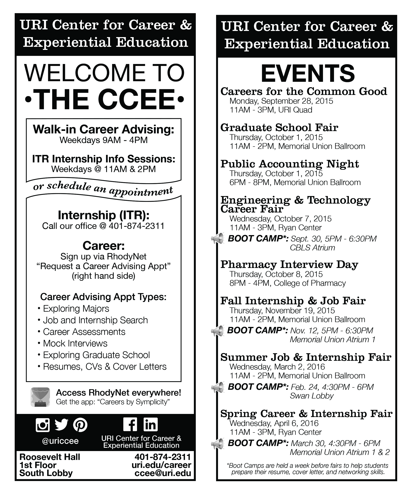
This is the front and back of one of the handouts for the department.
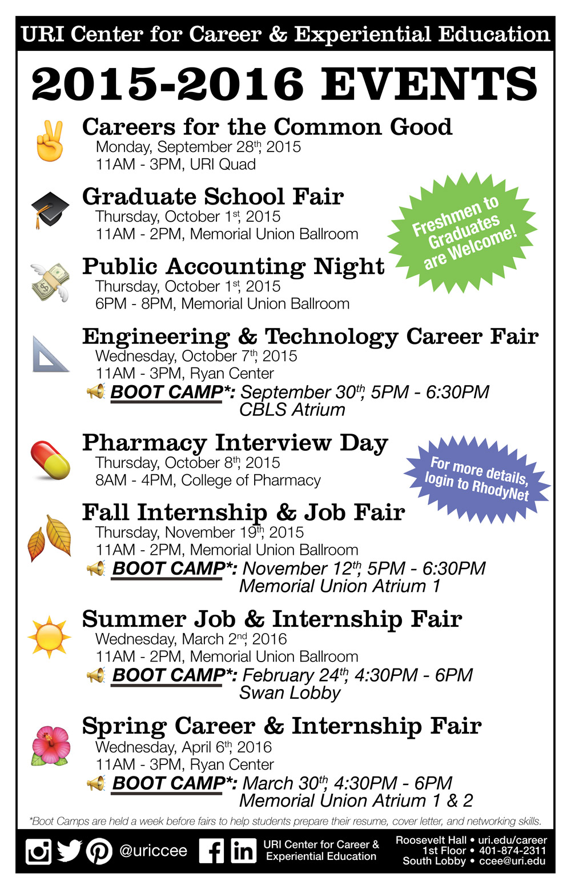
This is the events flyer, which was printed poster sized and on 8.5"x11"

This was the template I used for any special events we had on campus.
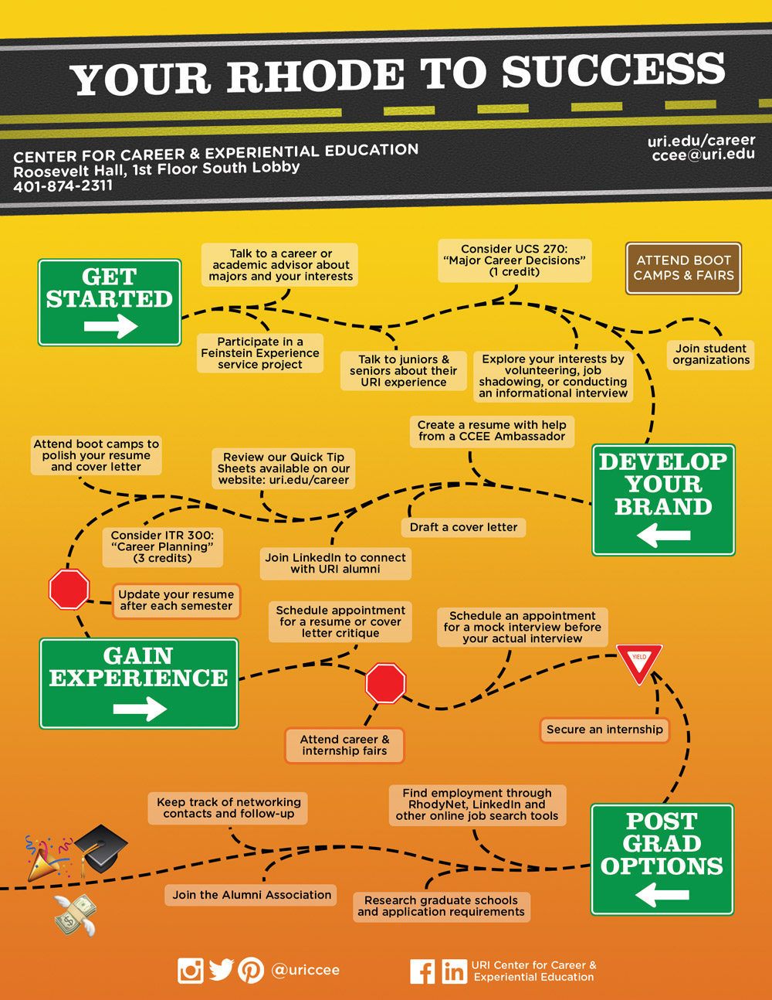
This infographic was designed for students at all stages of their college career.
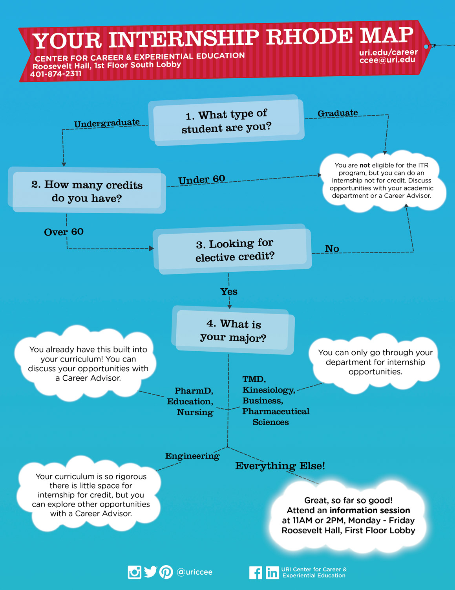
This infographic was designed for students to see if they were eligible for our program to do an internship for credit.
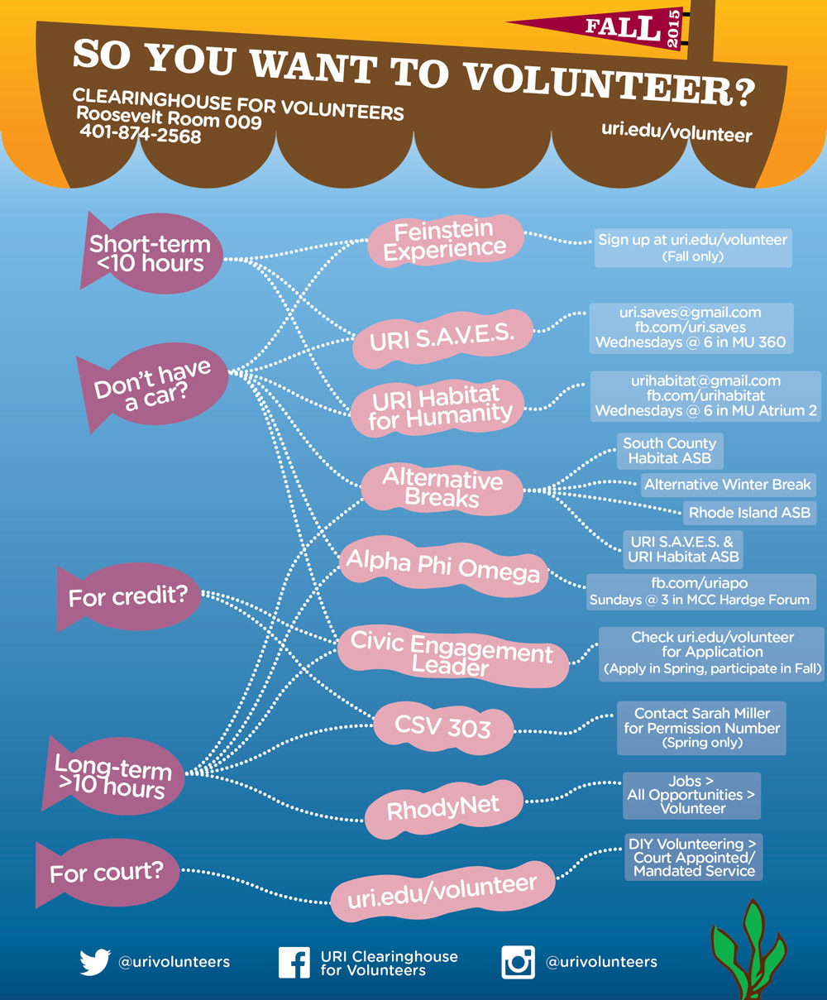
This flow chart was created for students at URI who are looking to volunteer. I created it to streamline the walk-in process at the volunteer office.
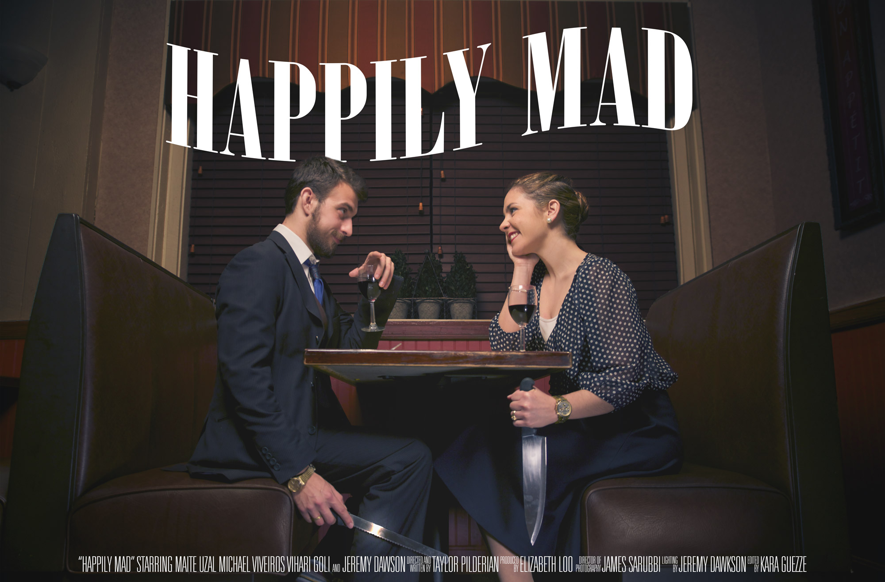
This poster was designed for an independent film called Happily Mad.
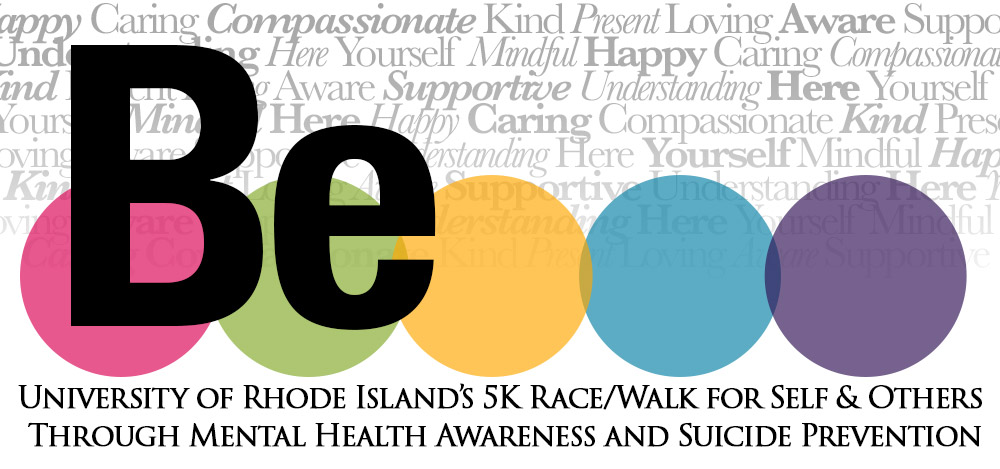
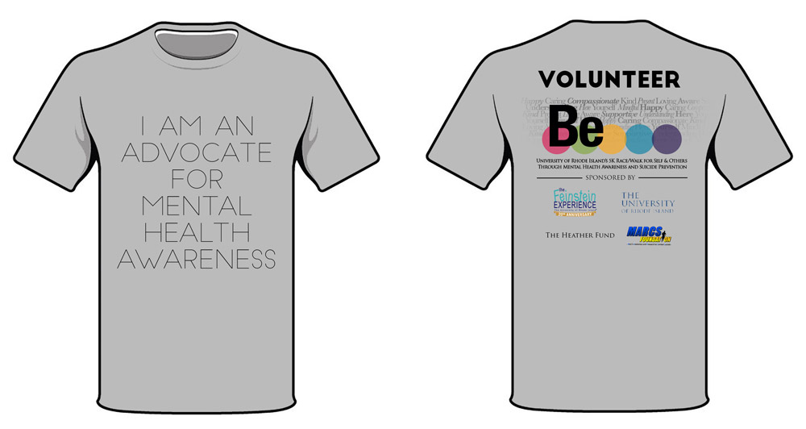
Be. 5K logo and t-shirt design
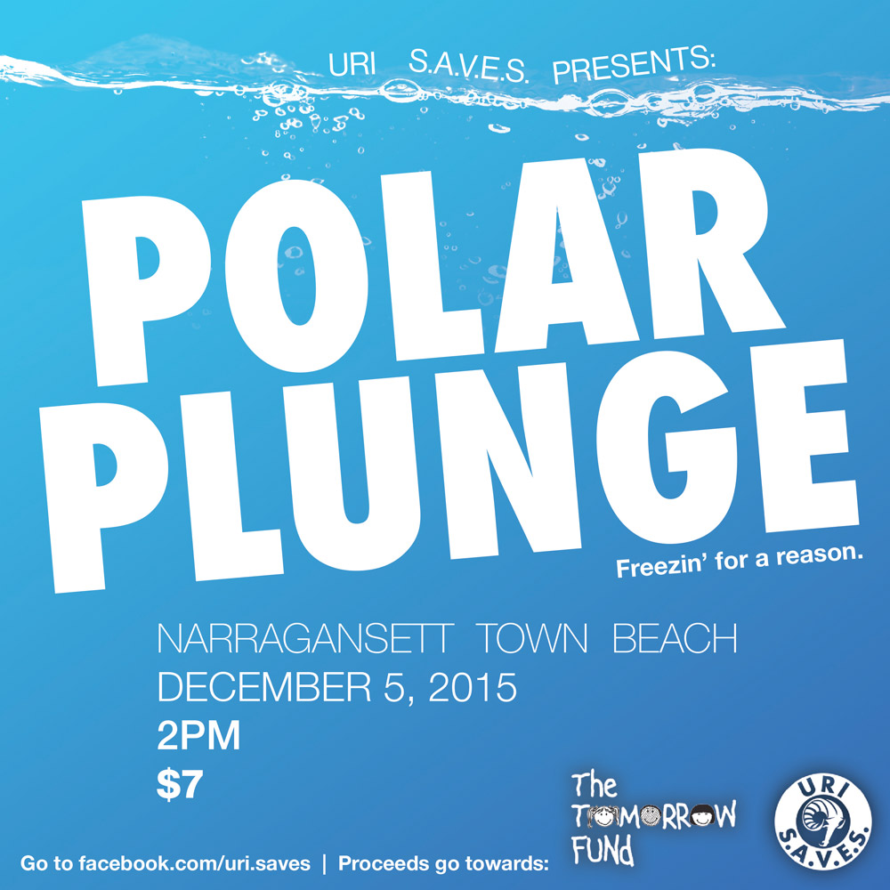
This flyer was designed for an event hosted by URI S.A.V.E.S. benefitting The Tomorrow Fund.
This logo was designed for Rhody Outpost, an emergency food pantry for the students of University of Rhode Island. The Ram in the icon is the Official URI logo.
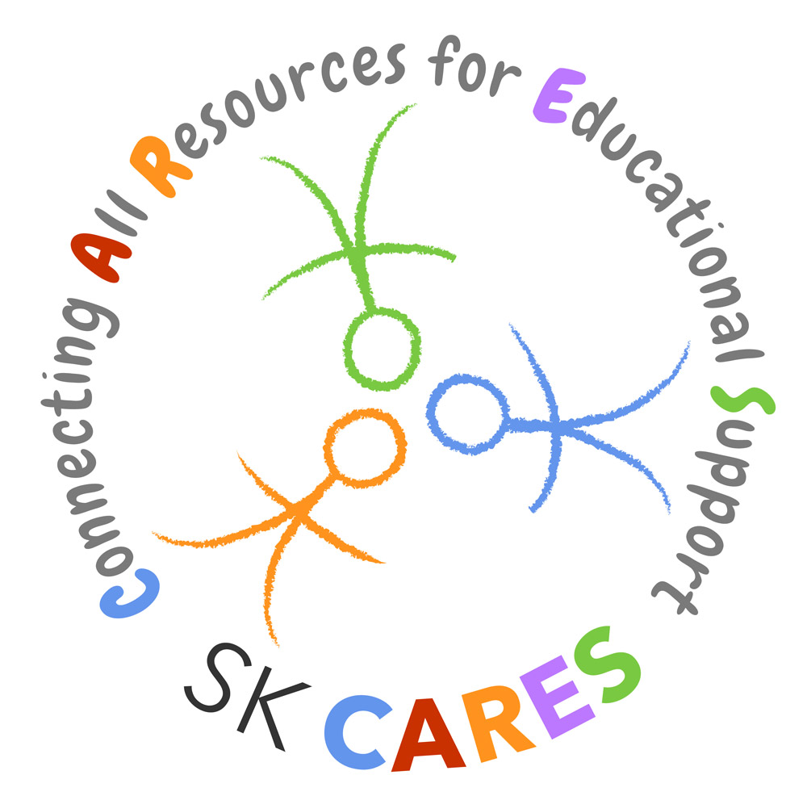
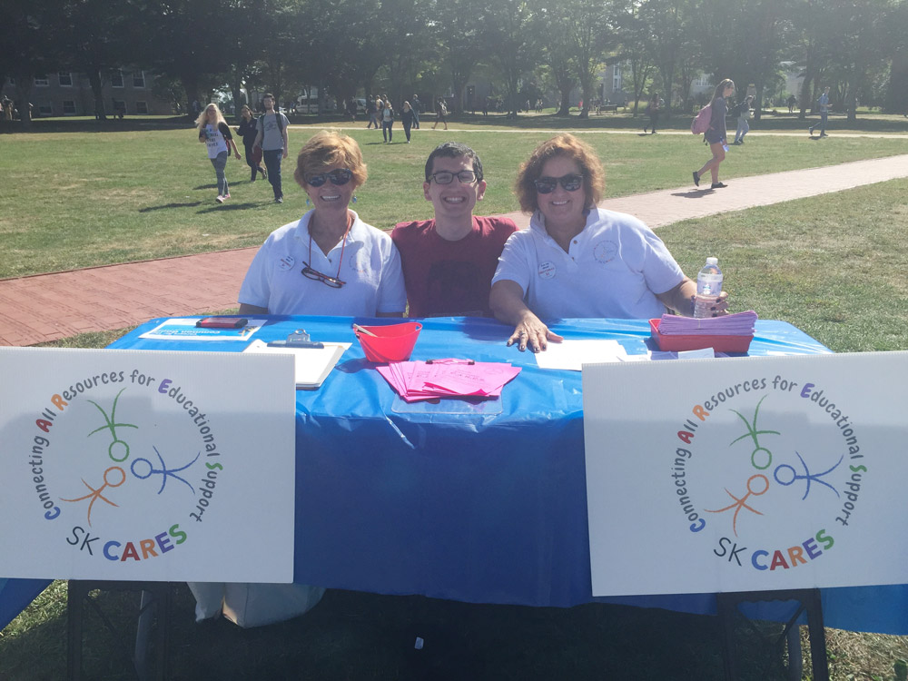
This logo was designed for SK CARES, a local nonprofit based in South Kingston, RI. That's me with the co-presidents of the organization. If you look hard enough, you can see it on their shirts!
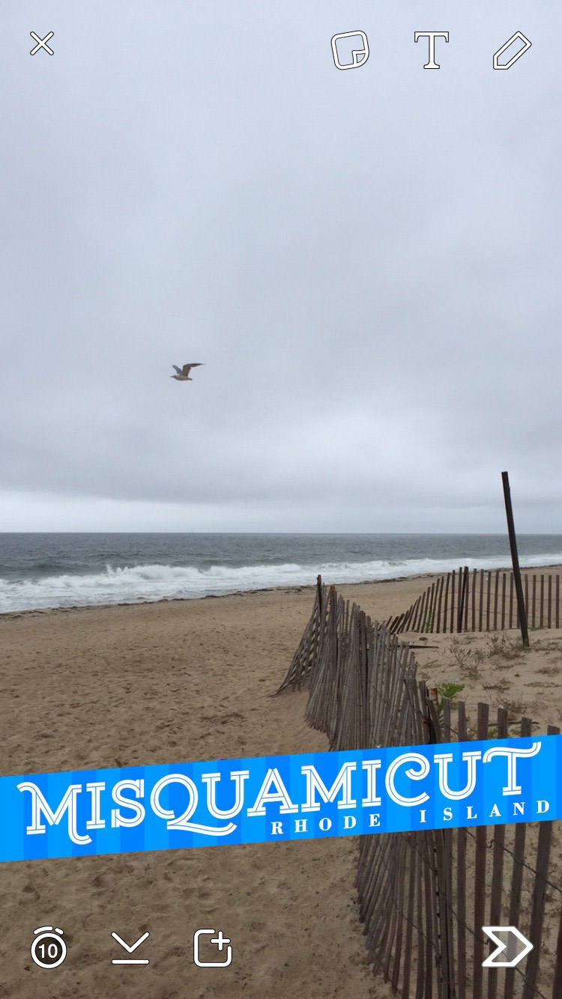
I designed the geofilter for Misquamicut, RI, which is used by Snapchatting tourists and residents.
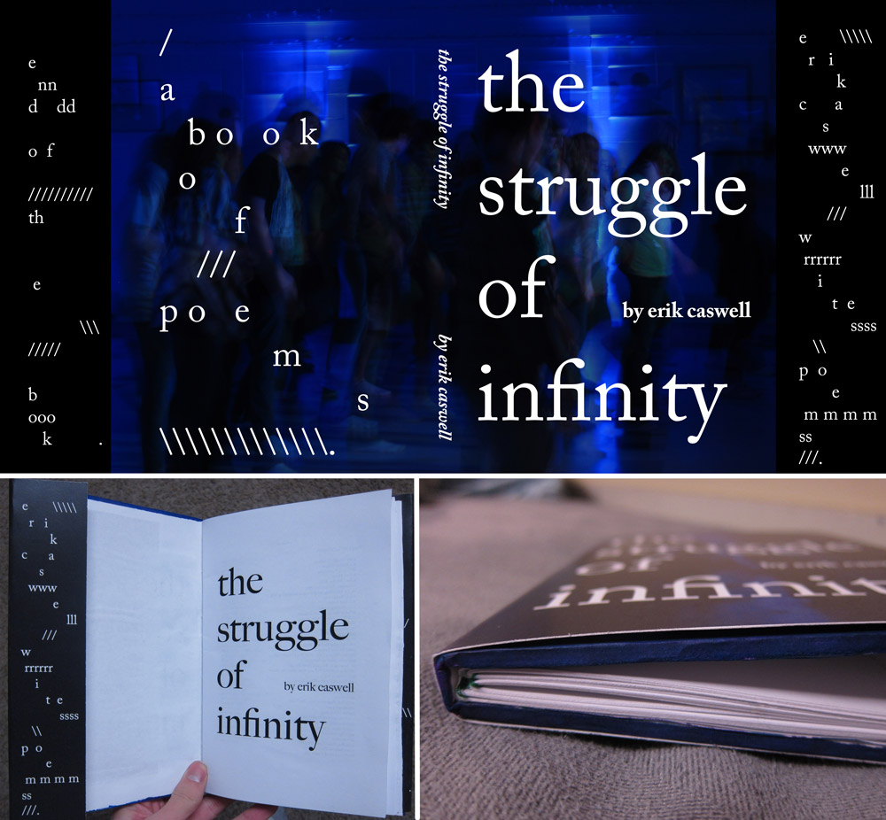
I designed this book sleeve for a friend of mine. Most of his poems are abstract and dark, so I wanted the cover to reflect that. Printed and bound by yours truly.